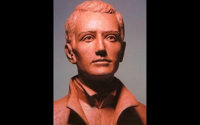
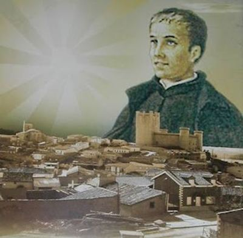

Isusovački blaženici
Svećenik
Bl. Bernard Franjo de Hoyos
1711. – 1735.
Mladi španjolski isusovac Bernardo de Hoyos širio je pobožnost Srcu Isusovu. Molitveni život povezivao je sa studijem, pisanjem i organiziranjem zajedničkoga apostolata.
Tekst je preveden i prilagođen uz pomoć umjetne inteligencije.

Izvor slike


Izvor slike


Izvor slike
- Spomendan
- 29. studenoga
- Zaštitništvo
- Nije navedeno u izvoru
- Životni vijek
- 1711. – 1735.
- Djelovanje
- Pisanje, znanost i umjetnost · Euharistija i pobožnosti
- Razdoblje
- 18. stoljeće
- Svećeničko ređenje
- 2. siječnja 1735., Valladolid
- Beatifikacija
- 18. travnja 2010., Valladolid
- Datum rođenja
- 21.08.1711.
- Mjesto rođenja
- Torrelobatón, Valladolid, Španjolska
- Datum smrti
- 29.11.1735.
- Mjesto smrti/mučeništva
- Valladolid, Španjolska
- Okolnosti smrti/mučeništva
- Umro od tifusa tijekom treće probacije.
- Uloga
- Svećenik
- Mučenik
- Ne
- Ostale oznake
- Španjolac; Promicatelj pobožnosti Srcu Isusovu u Španjolskoj
- Pripadnost
- Isusovac
- Drugi oblici imena
- Bernardo de Hoyos · Bernard Francis de Hoyos · Bernard · Bernardo Francisco de Hoyos
Životopis
Bernardo Francisco de Hoyos rođen je 21. kolovoza 1711. u Torrelobatónu, gdje mu je otac bio općinski tajnik. Imena je dobio po Bernardu iz Clairvauxa i Franji Ksaverskom. Školovao se kod isusovaca u Medini del Campo i Villagarcíji. Uz preporuku Félixa de Vargasa primljen je u novicijat 11. srpnja 1726., prije petnaestoga rođendana; sa sedamnaest je položio prve zavjete.
Filozofiju je studirao u Medini, a od 1731. teologiju u kolegiju San Ambrosio u Valladolidu. Ugledao se osobito u Ivana Berchmansa. Njegovu nutarnju izgradnju obilježili su mistični doživljaji, ali i razdoblja duhovne suhoće. Čitanje Gallifetove knjige, koje je poduzeo pomažući Agustínu de Cardaverazu, usmjerilo ga je 1733. prema širenju pobožnosti Srcu Isusovu. Vlastitu je posvetu izrekao 12. lipnja obrascem Klaudija de la Colombièrea.
Poslanje nije zadržao u privatnoj molitvi. S duhovnikom Ivanom de Loyolom pripremao je Skriveno blago, objavljeno 1734., okupljao suradnike, širio molitvene sličice i poticao bratovštine. Pisao je biskupima i Filipu V. tražeći potporu za poseban liturgijski blagdan. U lipnju 1735. organizirao je prvu javnu španjolsku devetnicu Srcu Isusovu. Zbog dobi bila je potrebna posebna dispenza za ređenje 2. siječnja 1735.; mladu je misu slavio četiri dana poslije.
Tijekom treće probacije obolio je od tifusa i umro 29. studenoga 1735. Premda je glas svetosti postojao za života, povijesne okolnosti odgodile su postupak do 1895. Herojske kreposti priznate su 1996.; za beatifikaciju je prihvaćeno ozdravljenje Mercedes Cabezas iz 1936. Beatifikacija je proslavljena u Valladolidu 18. travnja 2010.; obred je kao papin izaslanik predvodio Angelo Amato. Njegovo se djelovanje pamti kao početak španjolskoga apostolata Srca Isusova.
Život i nasljeđe
Hoyos je oko pothvata širenja pobožnosti okupljao suradnike umjesto da zanemari vlastite studijske dužnosti. Za djelo poznato kao Skriveno blago dao je zamisao i osnovu, dok je duhovnik Juan de Loyola sudjelovao u pisanju. Taj podatak razlikuje zajednički književni pothvat od jednostavnoga osobnog autorstva. Poticaj je došao i preko knjige Josepha de Gallifeta koju je čitao radi molbe drugoga subrata. Njegova se kratka biografija tako povezuje s razmjenom knjiga, bilježaka i ideja među ljudima koji su pobožnost širili u različitim gradovima.
Tekst je preveden i prilagođen uz pomoć umjetne inteligencije.
Pročitaj više na izvornoj stranici ↗